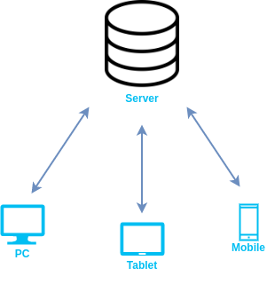

Web Technologies
Web Technology refers to the various tools and techniques that are utilized in the process of communication between different types of devices over the internet. A web browser is used to access web pages. Web browsers can be defined as programs that display text, data, pictures, animation, and video on the Internet. Hyperlinked resources on the World Wide Web can be accessed using software interfaces provided by Web browsers.
Web Technology can be classified into the following sections:
World Wide Web (WWW):

The World Wide Web is based on several different technologies : Web browsers, Hypertext Markup Language (HTML) and Hypertext Transfer Protocol (HTTP).
Web Browser

The web browser is an application software to explore www (World Wide Web). It provides an interface between the server and the client and requests to the server for web documents and services.
Web Server

Web server is a program which processes the network requests of the users and serves them with files that create web pages. This exchange takes place using Hypertext Transfer Protocol (HTTP).
Web Pages

A Webpage is a digital document that is linked to the World Wide Web and viewable by anyone connected to the internet has a web browser.
Web development

Web development refers to the building, creating, and maintaining of websites. It includes aspects such as web design, web publishing, web programming, and database management. It is the creation of an application that works over the internet i.e. websites.
World Wide Web (WWW):
The World Wide Web abbreviated as WWW and commonly known as the web. The WWW was initiated by CERN (European library for Nuclear Research) in 1989.
History:
It is a project created, by Timothy Berner’s Lee in 1989, for researchers to work together effectively at CERN. is an organization, named World Wide Web Consortium (W3C), which was developed for further development in the web. This organization is directed by Tim Berner’s Lee, aka the father of the web.
System Architecture:
From the user’s point of view, the web consists of a vast, worldwide connection of documents or web pages. Each
page may contain links to other pages anywhere in the world. The pages can be retrieved and viewed by using
browsers of which internet explorer, Netscape Navigator, Google, Chrome, etc are the popular ones. The browser
fetches the page requested interprets the text and formatting commands on it, and displays the page, properly
formatted, on the screen.
The basic model of how the web works are shown in the figure below. Here the browser is displaying a web
page on the client machine. When the user clicks on a line of text that is linked to a page on the abd.com
server, the browser follows the hyperlink by sending a message to the abd.com server asking it for the page.
Here the browser displaying a web page on the client machine when the user clicks on a line of text that is linked to a page on abd.com, the browser follows the hyperlink by sending a message to abd.com server asking for the page.
Working of WWW:
The World Wide Web is based on several different technologies: Web browsers, Hypertext Markup Language (HTML) and Hypertext Transfer Protocol (HTTP). A Web browser is used to access webpages. Web browsers can be defined as programs which display text, data, pictures, animation and video on the Internet. Hyperlinked resources on the World Wide Web can be accessed using software interface provided by Web browsers. Initially Web browsers were used only for surfing the Web but now they have become more universal. Web browsers can be used for several tasks including conducting searches, mailing, transferring files, and much more. Some of the commonly used browsers are Internet Explorer, Opera Mini, Google Chrome.
Web Browser
When we need any kind of information most of the time we get help from the Internet, and we get information. The Internet provides us useful information easily; we use mobile phones, computers, and tablets. We searched for a lot of things in our daily life, so we get information about all over the world, but we can not get information by just only getting connected to the Internet. We need a platform where we can search for our questions. The platform that provides such kinds of services is called a web browser, without a web browser internet will not be able to provide information.
What is the Web Browser?
The web browser is an application software to explore www (World Wide Web). It provides an interface between the server and the client and requests to the server for web documents and services. It works as a compiler to render HTML which is used to design a webpage. Whenever we search anything on the internet, the browser loads a web page written in HTML, including text, links, images, and other items such as style sheets and JavaScript functions. Google Chrome, Microsoft Edge, Mozilla Firefox, Safari are examples of web browsers.
How does a web browser work?
A web browser helps us find information anywhere on the internet. It is installed on the client computer and requests information from the webserver such a type of working model is called a client-server model.
The browser receives information through HTTP protocol. In which transmission of data is defined. When the browser received data from the server, it is rendered by HTML to user-readable form and, information displayed on the device screen.
Website Cookies
When we visited any website over the internet our web browser stores information about us in small files called cookies. Cookies are designed to remember stateful information about our browsing history. Some more cookies are used to remember about us like our interests, our browsing patterns, etc. Websites show us ads based on our interests using cookies.
Some popular Web Browsers
There are some popular and most used web browsers like Google Chrome, Mozilla Firefox, Microsoft Edge, Safari, etc.
Web Servers
Web Serveris a program which processes the network requests of the users and serves them with files that create web pages. This exchange takes place using Hypertext Transfer Protocol (HTTP). Basically, web servers are computers used to store HTTP files which makes a website and when a client requests a certain website, it delivers the requested website to the client. For example, you want to open Facebook on your laptop and enter the URL in the search bar of google. Now, the laptop will send an HTTP request to view the facebook webpage to another computer known as the webserver. This computer (webserver) contains all the files (usually in HTTP format) which make up the website like text, images, gif files, etc. After processing the request, the webserver will send the requested website-related files to your computer and then you can reach the website. Different websites can be stored on the same or different web servers but that doesn’t affect the actual website that you are seeing in your computer. The web server can be any software or hardware but is usually a software running on a computer. One web server can handle multiple users at any given time which is a necessity otherwise there had to be a web server for each user and considering the current world population, is nearly close to impossible. A web server is never disconnected from the internet because if it was, then it won’t be able to receive any requests, and therefore cannot process them.
There are many web servers available in the market both free and paid. Some of them are described below:
Apache HTTP server: It is the most popular web server and about 60 percent of the world’s web server machines run this web server. The Apache HTTP web server was developed by the Apache Software Foundation. It is an open-source software which means that we can access and make changes to its code and mold it according to our preference. The Apache Web Server can be installed and operated easily on almost all operating systems like Linux, MacOS, Windows, etc.
Microsoft Internet Information Services (IIS):IIS (Internet Information Services) is a high performing web server developed by Microsoft. It is strongly united with the operating system and is therefore relatively easier to administer. It is developed by Microsoft, it has a good customer support system which is easier to access if we encounter any issue with the server. It has all the features of the Apache HTTP Server except that it is not an open-source software and therefore its code is inaccessible which means that we cannot make changes in the code to suit our needs. It can be easily installed in any Windows device.

Web Pages
A Webpage is a digital document that is linked to the world Wide Web and viewable by anyone connected to the internet having a web browser. It can contain any type of information, such as text, color, graphics, animations, videos and sounds, etc.
A Webpage is a document which is written in the HTML, it can be viewed from the Internet. It can be accessed by entering the URL on the address bar of the web browser.
Web Development
Web development refers to the building, creating, and maintaining of websites. It includes aspects such as web design, web publishing, web programming, and database management. It is the creation of an application that works over the internet i.e. websites.
The word Web Development is made up of two words, that is:
Web:It refers to websites, web pages or anything that works over the internet.
Development:Building the application from scratch.
Frontend Development
Backend Development
Frontend Roadmap:
HTML:stands for HyperText Markup Language. It is used to design the front end portion of web pages using markup language. It acts as a skeleton for a website since it is used to make the structure of a website.
CSS:Cascading Style Sheets fondly referred to as CSS is a simply designed language intended to simplify the process of making web pages presentable. It is used to style our website.
JavaScript: JavaScript is a scripting language used to provide a dynamic behavior to our website.
Bootstrap:Bootstrap is a free and open-source tool collection for creating responsive websites and web applications. It is the most popular CSS framework for developing responsive, mobile-first websites. Nowadays, the websites are perfect for all the browsers (IE, Firefox, and Chrome) and for all sizes of screens (Desktop, Tablets, Phablets, and Phones).
- Bootstrap 4
- Bootstrap 5
- AngularJS
- React.js
- VueJS
- jQuery
- Bootstrap
- Material UI
- Tailwind CSS
- jQuert UI
- Some other libraries and frameworks are: Handlebar.js Backbone.js, Ember.js etc.
Backend Roadmap
- PHP is a server-side scripting language designed specifically for web development.
- JavaJava is one of the most popular and widely used programming language. It is highly scalable.
- Python Python is a programming language that lets you work quickly and integrate systems more efficiently.
- Node.js Node.js is an open source and cross-platform runtime environment for executing JavaScript code outside a browser.
- Back End Frameworks The list of back end frameworks are: Express, Django, Rails, Laravel, Spring, etc.
Web Development can be classified into two ways:
Frontend Development:
The part of a website that the user interacts directly is termed as front end. It is also referred to as the ‘client side’ of the application.

Frontend Frameworks and Libraries:
Backend Development:
Backend is the server side of a website. It is the part of the website that users cannot see and interact. It is the portion of software that does not come in direct contact with the users. It is used to store and arrange data.